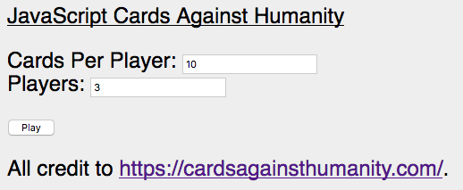
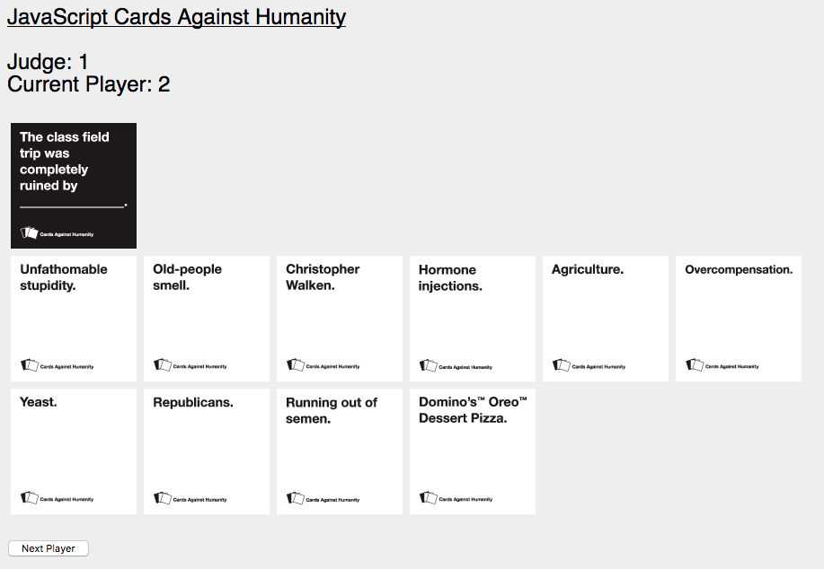
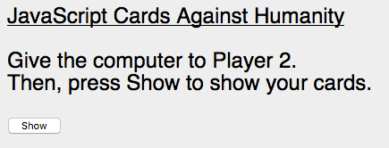

Before you go any farther... this game is NSFW and if you are under the age of 13 and/or aren't a bad person, you should consider going back. If you haven't heard about it before, check out the official website. Play Download For Offline Use My friends and I are bad people, and as a result we like to play the occasional game of Cards Against Humanity. The people who make this game have a free printable PDF download, which is pretty cool. However, I didn't really want to print the cards, so I figured I'd make a digital version. Since we only had one computer to play on, I set it up so that the entire thing runs on one device that you have to hand to each person. Yes, it's tedious, and yes, you can find much better online multiplayer implementations of this game. I don't even know why I'm uploading this, to be honest. But if you know the rules and you still want to play, go ahead and click one of those buttons up there. It should be pretty self-explanatory.
Here are some screenshots so that you can see how great mediocre-but-usable this program is.

Pretty minimalist, but it gets the job done. You can choose how many players to have, and how many cards each, at the beginning. The randomization is pretty rudimentary, so don't make anything that uses more than about 200 cards at any given time -- it will hang the JavaScript. At least it stops two people from getting the same card at once...

Here's the main card choosing user interface. Just click whatever card(s) you want to submit and then press Next Player. No, you can't undo selections, and no, you can't pick up additional cards, and no, I won't implement those features any time soon. Sorry.

Tedious, but it gets the job done. Remember who is which player, obey the on-screen prompts, and you should be okay.